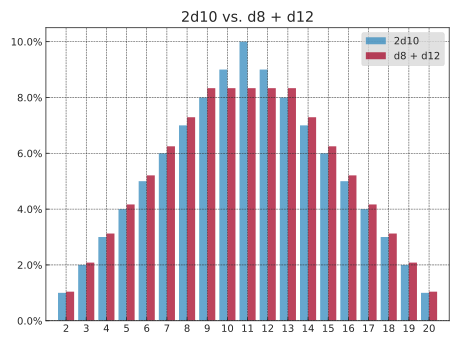
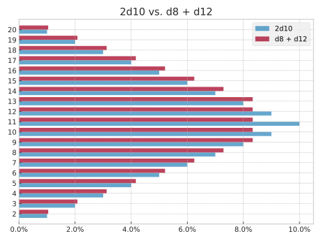
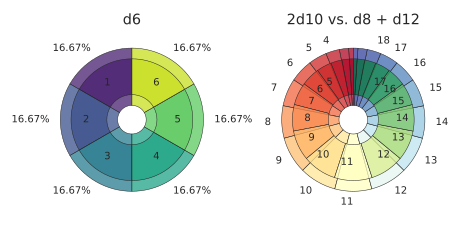
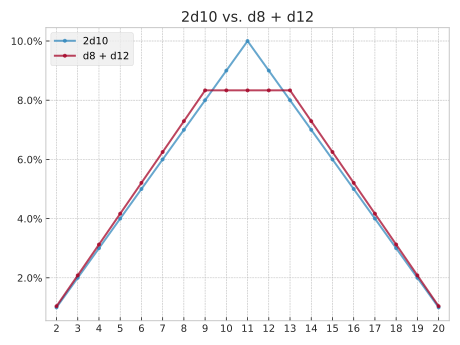
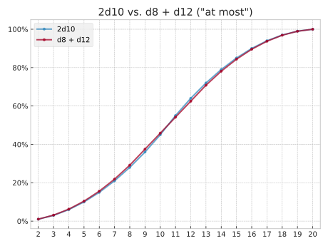
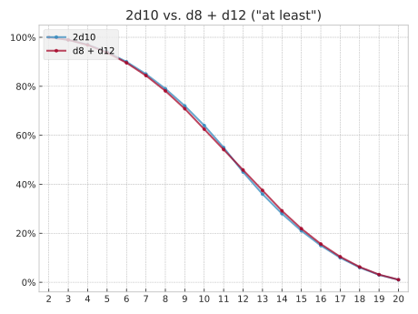
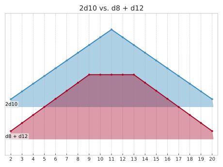

dyce.viz.matplotlib package reference
dyce.viz.matplotlib provides optional, basic Matplotlib-based visualization utilities.
Its requirements can be installed via the viz optional dependency group.
1 2 3 | |
BurstFormatterT = Callable[[_T, Fraction, H[_T]], str]
module-attribute
Callable type for burst-plot wedge labels.
Called as formatter(outcome, probability, histogram).
Return an empty string to suppress the label for that wedge.
format_outcome_name(outcome: _T, prob: Fraction, h: H[_T]) -> str
Experimental
dyce.viz.matplotlib.format_outcome_name is experimental; its interface may change or it may be removed in a future release.
Burst-plot formatter that labels each wedge with its outcome.
If outcome has a .name attribute (e.g. an Enum), that is used; otherwise str(outcome) is used.
Source code in dyce/viz/matplotlib.py
103 104 105 106 107 108 109 110 111 112 113 | |
format_outcome_name_probability(outcome: _T, prob: Fraction, h: H[_T]) -> str
Experimental
dyce.viz.matplotlib.format_outcome_name_probability is experimental; its interface may change or it may be removed in a future release.
Burst-plot formatter that labels each wedge with both its outcome and probability.
If outcome has a .name attribute (e.g. an Enum), that is used; otherwise str(outcome) is used.
Source code in dyce/viz/matplotlib.py
119 120 121 122 123 124 125 126 127 128 129 130 | |
format_probability(outcome: _T, prob: Fraction, h: H[_T]) -> str
Experimental
dyce.viz.matplotlib.format_probability is experimental; its interface may change or it may be removed in a future release.
Burst-plot formatter that labels each wedge with its probability as a percentage.
Source code in dyce/viz/matplotlib.py
136 137 138 139 140 141 142 143 144 145 | |
plot_bar(*hs: H, alpha: float = _DEFAULT_PLOT_ALPHA, ax: Axes | None = None, cmap: str | Colormap | None = None, graph_type: GraphType = GraphType.NORMAL, horizontal: bool = False, labels: Sequence[str] = ()) -> Axes
Experimental
dyce.viz.matplotlib.plot_bar is experimental; its interface may change or it may be removed in a future release.
Plots a grouped bar chart of one or more histograms.
Use labels to assign legend names to each histogram.
graph_type controls which variant of the distribution is plotted (see GraphType).
When horizontal is True, bars are drawn horizontally with outcomes on the y-axis and probabilities on the x-axis.
If ax is None, matplotlib.pyplot.gca() is used.
Returns the axes so the caller can further customise the plot.
1 2 3 4 5 6 7 8 9 10 | |

1 2 3 4 5 6 7 8 9 10 11 | |

Source code in dyce/viz/matplotlib.py
152 153 154 155 156 157 158 159 160 161 162 163 164 165 166 167 168 169 170 171 172 173 174 175 176 177 178 179 180 181 182 183 184 185 186 187 188 189 190 191 192 193 194 195 196 197 198 199 200 201 202 203 204 205 206 207 208 209 210 211 212 213 214 215 216 217 218 219 220 221 222 223 224 225 226 227 228 229 230 231 232 233 234 235 236 237 238 239 240 241 242 243 244 | |
plot_burst(h: H[_T1], compare: H[_T2] | None = None, *, alpha: float = _DEFAULT_PLOT_ALPHA, ax: Axes | None = None, cmap: str | Colormap | None = None, compare_cmap: str | Colormap | None = None, compare_formatter: BurstFormatterT[_T2] | None = None, formatter: BurstFormatterT[_T1] | BurstFormatterT[_T1 | _T2] = format_outcome_name, title: str = '', use_midpoints_for_colors: bool = True) -> Axes
plot_burst(
h: H[_T1],
compare: None = ...,
*,
alpha: float = ...,
ax: Axes | None = ...,
cmap: str | Colormap | None = ...,
compare_cmap: str | Colormap | None = ...,
compare_formatter: BurstFormatterT[_T1] | None = ...,
formatter: BurstFormatterT[_T1] = ...,
title: str = ...,
use_midpoints_for_colors: bool = ...,
) -> Axes
plot_burst(
h: H[_T1],
compare: H[_T2],
*,
alpha: float = ...,
ax: Axes | None = ...,
cmap: str | Colormap | None = ...,
compare_cmap: str | Colormap | None = ...,
compare_formatter: BurstFormatterT[_T2],
formatter: BurstFormatterT[_T1] = ...,
title: str = ...,
use_midpoints_for_colors: bool = ...,
) -> Axes
plot_burst(
h: H[_T1],
compare: H[_T2],
*,
alpha: float = ...,
ax: Axes | None = ...,
cmap: str | Colormap | None = ...,
compare_cmap: str | Colormap | None = ...,
compare_formatter: None = ...,
formatter: BurstFormatterT[_T1 | _T2] = ...,
title: str = ...,
use_midpoints_for_colors: bool = ...,
) -> Axes
plot_burst(
h: H[_T1],
compare: H[_T2],
*,
alpha: float = ...,
ax: Axes | None = ...,
cmap: str | Colormap | None = ...,
compare_cmap: str | Colormap | None = ...,
compare_formatter: BurstFormatterT[_T2] | None = ...,
formatter: BurstFormatterT[_T1] = ...,
title: str = ...,
use_midpoints_for_colors: bool = ...,
) -> Axes
Experimental
dyce.viz.matplotlib.plot_burst is experimental; its interface may change or it may be removed in a future release.
Plots a dual concentric pie chart for one or two histograms, useful for getting a “feel” when comparing distributions.
The inner ring represents h and the outer ring represents compare.
When compare is None (the default), both rings show the same histogram: the inner ring labels outcomes (via formatter) and the outer ring labels probabilities.
When compare differs from h, both rings default to labelling outcomes
This is useful for comparing two related distributions side-by-side in a single visual.
Wedge labels are suppressed when the probability is below Fraction(1, 32) (~3.1%) to avoid clutter.
formatter and compare_formatter are BurstFormatterT callables (see format_outcome_name, format_probability, format_outcome_name_probability).
cmap / compare_cmap accept any matplotlib colormap name or instance.
If None, mpl.rcParams["image.cmap"] is used.
If ax is None, matplotlib.pyplot.gca() is used.
Returns the axes so the caller can further customise the plot.
1 2 3 4 5 6 7 8 9 10 11 12 13 14 15 16 17 18 19 20 21 22 | |

Source code in dyce/viz/matplotlib.py
303 304 305 306 307 308 309 310 311 312 313 314 315 316 317 318 319 320 321 322 323 324 325 326 327 328 329 330 331 332 333 334 335 336 337 338 339 340 341 342 343 344 345 346 347 348 349 350 351 352 353 354 355 356 357 358 359 360 361 362 363 364 365 366 367 368 369 370 371 372 373 374 375 376 377 378 379 380 381 382 383 384 385 386 387 388 389 390 391 392 393 394 395 396 397 398 399 400 401 402 403 | |
plot_line(*hs: H, alpha: float = _DEFAULT_PLOT_ALPHA, ax: Axes | None = None, cmap: str | Colormap | None = None, graph_type: GraphType = GraphType.NORMAL, labels: Sequence[str] = (), markers: str = _DEFAULT_MARKERS) -> Axes
Experimental
dyce.viz.matplotlib.plot_line is experimental; its interface may change or it may be removed in a future release.
Plots a line graph of one or more histograms.
Use labels to assign legend names to each histogram. Unmatched histograms receive an empty label.
graph_type controls which variant of the distribution is plotted (see GraphType).
markers is a string whose characters are cycled across histograms (e.g. "oX^" produces circle, cross, triangle, circle, …).
If ax is None, matplotlib.pyplot.gca() is used.
Returns the axes so the caller can further customise the plot.
1 2 3 4 5 6 7 8 9 10 | |

1 2 3 4 5 6 7 8 9 10 11 12 | |

1 2 3 4 5 6 7 8 9 10 11 12 | |

Source code in dyce/viz/matplotlib.py
406 407 408 409 410 411 412 413 414 415 416 417 418 419 420 421 422 423 424 425 426 427 428 429 430 431 432 433 434 435 436 437 438 439 440 441 442 443 444 445 446 447 448 449 450 451 452 453 454 455 456 457 458 459 460 461 462 463 464 465 466 467 468 469 470 471 472 473 474 475 476 477 478 479 480 481 482 483 484 485 486 487 488 489 490 491 | |
plot_ridge(*hs: H[_T], alpha: float = _DEFAULT_RIDGE_ALPHA, ax: Axes | None = None, cmap: str | Colormap | None = None, graph_type: GraphType = GraphType.NORMAL, labels: Sequence[str] = (), overlap: float = _DEFAULT_RIDGE_OVERLAP, peak: float | None = None, show_peak_labels: bool = True) -> Axes
Experimental
dyce.viz.matplotlib.plot_ridge is experimental; its interface may change or it may be removed in a future release.
Plots a ridgeline (“joyplot”) of one or more histograms, useful for comparing a family of related distributions, where plot_line would produce a tangle of overlapping curves.
Each histogram becomes its own filled ridge, stacked vertically and offset so that neighbors overlap. Ridges appear top-to-bottom in argument order, and lower ridges are drawn in front of higher ones.
Each ridge covers only its own outcomes. Where a neighbor has an outcome this histogram lacks, the line bridges the gap rather than dipping to zero, since the histogram says nothing there rather than saying zero.
Use labels to name each histogram. Names are drawn inside the plot at their ridge’s baseline, pinned to the left edge, so a long one grows rightward over its own ridge rather than clipping into the margin. Unmatched histograms get a blank label.
cmap accepts any Matplotlib colormap name or instance, sampled evenly to color the ridges.
If None, the default line colors associated with the current style are used.
Pass mpl.rcParams["image.cmap"] to use the default color map instead.
graph_type controls which variant of the distribution is plotted (see GraphType).
overlap is how many rows tall a ridge at peak stands.
At 1.0, such a ridge just reaches the next row's baseline.
peak overrides the percentage drawn at full height, which is otherwise the largest among hs. Pass the largest across several figures to put them all on one scale, so ridges stay comparable between subplots.
If show_peak_labels is True, each ridge’s maximum point is labeled with its probability.
If ax is None, matplotlib.pyplot.gca() is used.
Returns the axes so the caller can further customise the plot.
1 2 3 4 5 6 7 8 9 | |

Source code in dyce/viz/matplotlib.py
494 495 496 497 498 499 500 501 502 503 504 505 506 507 508 509 510 511 512 513 514 515 516 517 518 519 520 521 522 523 524 525 526 527 528 529 530 531 532 533 534 535 536 537 538 539 540 541 542 543 544 545 546 547 548 549 550 551 552 553 554 555 556 557 558 559 560 561 562 563 564 565 566 567 568 569 570 571 572 573 574 575 576 577 578 579 580 581 582 583 584 585 586 587 588 589 590 591 592 593 594 595 596 597 598 599 600 601 602 603 604 605 606 607 608 609 610 611 612 613 614 615 616 617 618 619 620 621 622 623 624 625 626 627 628 629 630 631 632 633 634 635 636 637 638 639 640 641 642 643 644 645 646 647 648 649 650 651 652 653 654 655 656 657 658 659 660 661 662 663 664 665 666 667 668 669 670 671 672 673 674 675 676 677 678 679 680 681 682 683 684 | |